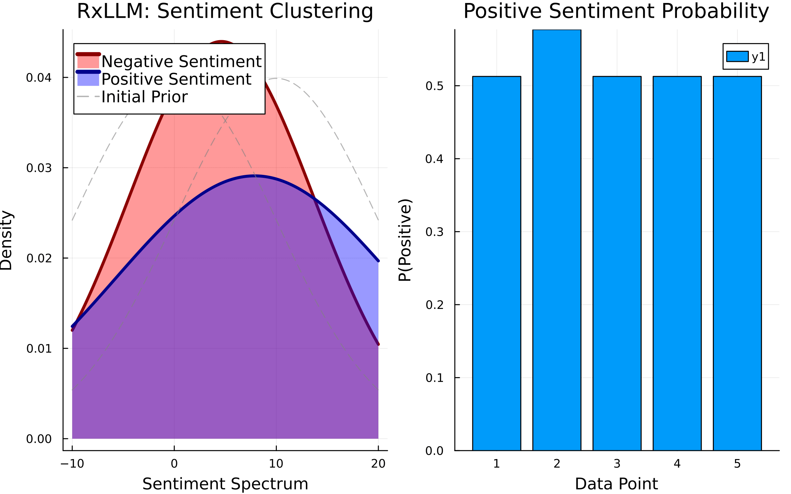

This example was automatically generated from a Jupyter notebook in the RxInferExamples.jl repository.
We welcome and encourage contributions! You can help by:
- Improving this example
- Creating new examples
- Reporting issues or bugs
- Suggesting enhancements
Visit our GitHub repository to get started. Together we can make RxInfer.jl even better! 💪
Large Language Models
⚠️ Warning: Maximum Unprincipledness Ahead ⚠️
⚠️ The speed of RxInfer will be bottlenecked by the speed of the LLM calls ⚠️
using RxInfer, OpenAI, JSON# Your OpenAI API key should be set in the environment variables
secret_key = ENV["OPENAI_KEY"];
llm_model = "gpt-4o-mini-2024-07-18";Disclaimer: This is probably one of the most unprincipled notebooks in the RxInferExamples repository. We're about to hook Large Language Models directly into Bayesian inference using nothing but good vibes and questionable life choices. If you're looking for rigorous mathematical foundations, you might want to slowly back away from this notebook.
That said, if you've ever wondered "what happens if I treat LLMs' outputs like a probability distribution?", you've come to the right place. We'll start with a gentle introduction to RxInfer for two reasons: first, we need to justify this madness of integrating LLMs with probabilistic models, and second, we want to explain what RxInfer is to newcomers in a single notebook with as few external references as possible. Think of this as "Bayesian Inference for People Who Just Want to See the Cool Stuff."
What is RxInfer? (The Gentle Introduction)
Before we commit crimes against Bayesian inference (by the way we use the word inference to mean "Bayesian inference", not the forward pass of a neural network), let's understand what RxInfer actually is and why it accidentally makes LLM integration possible.
RxInfer is a Julia package for Bayesian inference that takes a rather unusual approach: instead of treating your probabilistic model as one big mathematical beast that needs to be slayed with MCMC or variational inference, it breaks everything down into small, local conversations between probability distributions.
Imagine your probabilistic model as a social network where probability distributions are people, and they're all gossiping about what they think the true parameters might be. RxInfer organizes this gossip into an efficient message-passing protocol on something called a factor graph.
Factor Graphs: The Social Network of Probability
A factor graph is just a visual way to represent how different parts of your probabilistic model talk to each other. Think of it like this:
- Round nodes (variables): These represent the things you want to learn about
- Square nodes (factors): These represent relationships or constraints between variables
- Edges: These are the communication channels where probability distributions flow as "messages"
For example, if you want to model coin flips:
In this graph:
- Blue squares are variables (things we want to learn about)
- Orange squares are factors (probability distributions or relationships)
- Lines are the communication channels where messages flow back and forth
The magic happens when messages flow along these edges, updating beliefs as new information comes in.
The Philosophy: Local Conversations, Global Intelligence
Here's what makes RxInfer special: instead of solving your entire probabilistic model in one giant computation, it breaks everything down into local conversations.
Each node only needs to:
- Listen to messages from its neighbors
- Update its local beliefs
- Send updated messages to its neighbors
Repeat this process, and eventually the entire network converges to the exact or approximate posterior distributions. It's like crowd-sourced intelligence, but with math.
This approach has some nice properties:
- Modular: You can swap out parts of your model without affecting others
- Parallel: Different parts can update simultaneously
- Interpretable: You can inspect what each part of your model "thinks"
- Extensible: You can add new types of nodes... like LLMs 👀
The Beautiful Accident: RxInfer Doesn't Care What You Pass
Here's where things get interesting (and unprincipled).
RxInfer was designed for passing probability distributions along those edges. But here's the thing: the framework doesn't actually care what you pass. It just needs to know how to:
- Compute outgoing messages from incoming ones
- Update local beliefs (marginals)
- Calculate free energy contributions (we will skip this for now)
As long as you can define these two (three) things, you can plug in literally anything as a node. A matrix multiplication? Sure. A neural network? Why not (see examples within the repository). A Large Language Model? Hold my coffee...
The Moment of Questionable Judgment
So here we were, understanding that RxInfer is basically a message-passing system that doesn't care what you pass, when someone (probably me) had a thought:
"What if we just... asked ChatGPT to be a probability distribution?"
Now, any reasonable person would immediately recognize this as a terrible idea. Probability distributions have well-defined mathematical properties. They integrate to 1. They have moments. They follow laws. Jaynes would be rolling in his grave.
Large Language Models, on the other hand, are... vibes-based. They generate text that sounds plausible. They hallucinate. They change their mind if you ask the same question twice.
But here's the thing about terrible ideas: sometimes they work.
The Great LLM-Bayesian Integration Experiment
The plan was simple (and deeply unscientific):
- Create LLM nodes that can participate in message passing
- Teach LLMs to speak probability through prompting
- Let them gossip with real probability distributions and see what happens
- Hope nothing catches fire
Surprisingly, steps 1-3 worked. Step 4 is still ongoing.
The Problem: Can We Cluster Text Using Bayesian Inference?
Before we dive into the implementation, let's define a concrete problem that will motivate our LLM integration. We want to:
Cluster text snippets by sentiment, but with proper uncertainty quantification.
Here's our dataset - 5 text snippets about RxInfer.jl:
observations = [
"RxInfer.jl is confusing and frustrating to use. I wouldn't recommend it.",
"RxInfer.jl made my Bayesian modeling workflow much easier and more efficient!",
"Absolutely love RxInfer.jl! It's revolutionized my approach to probabilistic programming.",
"I gave RxInfer.jl a try, but it just doesn't work for my needs at all.",
"I prefer apples over oranges." # 🍎 Wait, this one's different...
];The challenges:
- Two sentiment clusters: Positive and negative opinions about RxInfer.jl
- Unrelated text: The last one isn't about RxInfer.jl at all
- Uncertainty: We want to know how confident we are about each classification
Traditional clustering would give us hard assignments. We want probabilistic clustering with uncertainty.
The Model: Mixing Traditional Bayesian with LLM Magic
Here's our probabilistic model for sentiment clustering (this will be the final model we will use):
@model function language_mixture_model(c, context₁, context₂, task₁, task₂, likelihood_task)
# Mixture probability (how much of each sentiment type)
s ~ Beta(1.0, 1.0)
# Two sentiment clusters with LLM-generated priors
m[1] ~ LLMPrior(context₁, task₁) # Negative sentiment prior
w[1] ~ Gamma(shape = 0.01, rate = 0.01)
m[2] ~ LLMPrior(context₂, task₂) # Positive sentiment prior
w[2] ~ Gamma(shape = 0.01, rate = 0.01)
for i in eachindex(c)
z[i] ~ Bernoulli(s) # Cluster assignment (0=negative, 1=positive)
y[i] ~ NormalMixture(switch = z[i], m = m, p = w) # Latent sentiment score
c[i] ~ LLMObservation(y[i], likelihood_task) # Observed text
end
endWhat This Model Does
Let's break this down:
s ~ Beta(1,1): Overall mixture proportion (how much positive vs negative sentiment in our dataset)m[1] ~ LLMPrior(context₁, task₁):- Ask an LLM: "Given that RxInfer.jl is terrible, what satisfaction score distribution would you expect?"
- LLM response becomes our prior for negative sentiment
m[2] ~ LLMPrior(context₂, task₂):- Ask an LLM: "Given that RxInfer.jl is great, what satisfaction score distribution would you expect?"
- LLM response becomes our prior for positive sentiment
z[i] ~ Bernoulli(s): Each text snippet gets assigned to positive or negative clustery[i] ~ NormalMixture(...): Each snippet has a latent "satisfaction score" based on its clusterc[i] ~ LLMObservation(y[i], likelihood_task):- Ask an LLM: "What sentiment score would generate this text?"
- This connects our observed text to the latent satisfaction scores
The Insight: LLMs as Probabilistic Components
The brilliant (and possibly insane) insight is that we're using LLMs as:
- LLMPrior: A way to generate informed priors based on contextual knowledge
- LLMObservation: A likelihood function that connects text to latent numerical variables
This means the LLMs aren't just doing classification - they're participating in full Bayesian inference!
Creating the LLM Nodes
Now that we understand why we need these nodes, let's see how to build them. Creating a custom node in RxInfer requires 4 steps (but we will skip the last two):
- Create the node structure using the
@nodemacro - Define message passing rules with the
@rulemacro - Specify marginal computations with the
@marginalrulemacro (skipped) - Implement free energy computation with the
@average_energymacro (skipped)
The beauty is in the message passing protocol. Each node only needs to know how to:
- Process incoming messages from neighbors
- Send outgoing messages to neighbors
- Maintain local beliefs
Let's look at the actual implementation:
LLMPrior Node
First, the node definition:
"""
LLMPrior
Node that represents an LLM's prior beliefs about latent variables based on contextual information.
The LLM interprets the context and task to produce a probability distribution as a prior.
# Interfaces
- `belief` (b): Output distribution representing the LLM's prior belief
- `context` (c): Input text providing context for the prior
- `task` (t): Input text describing what distribution to generate
"""
struct LLMPrior end
@node LLMPrior Stochastic [ (b, aliases = [belief]), (c, aliases = [context]), (t, aliases = [task]) ]Now here's the actual message passing rule that does the magic. This is going to be a forward rule that will provide a prior for the sentiment of the text. We understand that the syntax for the rule is a bit weird, so we refer the curious reader to the documentation.
@rule LLMPrior(:b, Marginalisation) (q_c::PointMass{<:String}, q_t::PointMass{<:String}) = begin
# Build the conversation with the LLM
messages = [
Dict("role" => "system",
"content" => """
You are an expert analyst who maps contextual cues to a
Normal(mean, variance) distribution.
• Think step-by-step internally.
• **Only** output a JSON object that conforms to the schema below.
• Do not wrap the JSON in markdown fences or add extra keys.
"""),
Dict("role" => "assistant",
"content" => """
## CONTEXT
$(q_c.point)
"""),
Dict("role" => "user",
"content" => """
## TASK
$(q_t.point)
Using the context above, infer a Normal distribution and return:
"analysis" – brief rationale (≤ 100 words)
"mean" – number in [0, 10]
"variance" – number in [1, 100]
""")
]
# Define strict JSON schema for consistent responses
response_schema = Dict(
"type" => "json_schema",
"json_schema" => Dict(
"name" => "normal_estimate",
"schema" => Dict(
"type" => "object",
"properties" => Dict(
"analysis" => Dict("type" => "string"),
"mean" => Dict("type" => "number", "minimum" => 0, "maximum" => 10),
"variance" => Dict("type" => "number", "minimum" => 1, "maximum" => 100)
),
"required" => ["analysis", "mean", "variance"],
"additionalProperties" => false
)
)
)
# Call the LLM and parse the response
r = create_chat(secret_key, llm_model, messages; response_format = response_schema)
obj = JSON.parse(r.response[:choices][1][:message][:content])
return NormalMeanVariance(obj["mean"], obj["variance"])
endLLMObservation Node
The node definition:
"""
LLMObservation
Node that represents an LLM's observation of data based on a latent belief and task description.
The LLM takes a latent belief and task description to produce corresponding observed data.
# Interfaces
- `out`: Output observation data generated by the LLM
- `belief` (b): Input latent variable/distribution that influences the observation
- `task` (t): Input text describing how to generate observations from beliefs
"""
struct LLMObservation end
@node LLMObservation Stochastic [ out, (b, aliases = [belief]), (t, aliases = [task]) ]Now we need to define the rule. Normally, we would have to define the rules for each interface (edge) of the node, but here we will skip this part and define only a backward rule from observations to a belief.
@rule LLMObservation(:b, Marginalisation) (q_out::PointMass{<:String}, q_t::PointMass{<:String}) = begin
messages = [
Dict("role" => "system",
"content" => """
You are **LLMObservation**, a senior evaluator who maps a text to
a Normal(mean, variance) distribution.
• Think step-by-step internally, but **only** output a JSON object
that conforms to the provided schema.
• Do not wrap the JSON in markdown fences or add extra keys.
"""),
Dict("role" => "assistant",
"content" => """
## TEXT
$(q_out.point)
"""),
Dict("role" => "user",
"content" => """
## TASK
$(q_t.point)
Using the text above, infer a Gaussian distribution.
Return a JSON object with keys:
"analysis" – ≤ 100 words explaining your reasoning
"mean" – number in [0, 10]
"variance" – number in [0.1, 100]
""")
]
response_schema = Dict(
"type" => "json_schema",
"json_schema" => Dict(
"name" => "normal_estimate",
"schema" => Dict(
"type" => "object",
"properties" => Dict(
"analysis" => Dict("type" => "string"),
"mean" => Dict("type" => "number", "minimum" => 0, "maximum" => 10),
"variance" => Dict("type" => "number", "minimum" => 0.1, "maximum" => 100)
),
"required" => ["analysis", "mean", "variance"],
"additionalProperties" => false
)
)
)
r = create_chat(secret_key, llm_model, messages; response_format = response_schema)
obj = JSON.parse(r.response[:choices][1][:message][:content])
return NormalMeanVariance(obj["mean"], obj["variance"])
end# Priors
context₁ = "RxInfer.jl is absolutely terrible."
context₂ = "RxInfer.jl is a great tool for Bayesian Inference."
prior_task = """
Provide a distribution of the statement.
- **Mean**: Most likely satisfaction score (0-10 scale)
- **Variance**: Uncertainty in your interpretation
- Low variance (2.0-4.0): Very clear sentiment
- Medium variance (4.1-6.0): Some ambiguity
- High variance (6.0-10.0): Unclear or mixed signals
"""
# Likelihood
likelihood_task = """
Evaluation of sentiment about RxInfer.jl and provide satisfaction score distribution.
If expression is not related to RxInfer.jl, return distribution with mean 5 and high variance of 100.
- **Mean**: Most likely satisfaction score (0-10 scale)
- **Variance**: Uncertainty in interpretation
- Low variance (0.1-1.0): Very clear sentiment, confident interpretation
- Medium variance (1.1-5.0): Some ambiguity in the text
- High variance (5.1-10.0): Unclear/mixed signals, or not related to RxInfer.jl
""";What Happens During Inference
LLM Priors Generate Initial Beliefs:
- Negative context → Low satisfaction score (≈ Gaussians with mean some mean between 0 and 5 and (perhaps) high variance)
- Positive context → High satisfaction score (≈ Gaussians with mean some mean between 5 and 10 and (perhaps) high variance)
LLM Observations Process Text:
- "RxInfer.jl is confusing..." → Low score, low uncertainty
- "Absolutely love RxInfer.jl..." → High score, low uncertainty
- "I prefer apples over oranges" → Medium score, HIGH uncertainty (not related!)
Message Passing Updates Beliefs:
- Traditional Bayesian update rules combine LLM outputs
- Cluster assignments emerge from the mixture model
- Uncertainty propagates through the network
Final Result: Clean clustering with proper uncertainty quantification
# Some shennenigans to make inference work
n_iterations = 5 # number of variational iterations to run
# initial values for the variational distributions, we use uninformative distributions
# If this looks weird to you, please refer to the documentation for the @initialization macro
init = @initialization begin
q(s) = vague(Beta)
q(m) = [NormalMeanVariance(0.0, 1e2), NormalMeanVariance(10.0, 1e2)]
q(y) = NormalMeanVariance(5.0, 1e2) # centered initialization with broad uncertainty
q(w) = [GammaShapeRate(0.01, 0.01), GammaShapeRate(0.01, 0.01)]
endInitial state:
q(s) = Distributions.Beta{Float64}(α=1.0, β=1.0)
q(m) = ExponentialFamily.NormalMeanVariance{Float64}[ExponentialFamily.No
rmalMeanVariance{Float64}(μ=0.0, v=100.0), ExponentialFamily.NormalMeanVari
ance{Float64}(μ=10.0, v=100.0)]
q(y) = ExponentialFamily.NormalMeanVariance{Float64}(μ=5.0, v=100.0)
q(w) = ExponentialFamily.GammaShapeRate{Float64}[ExponentialFamily.GammaS
hapeRate{Float64}(a=0.01, b=0.01), ExponentialFamily.GammaShapeRate{Float64
}(a=0.01, b=0.01)]import ReactiveMP: rule_nm_switch_k, softmax!
# Run Bayesian inference
# Again, RxInfer is fast, LLMs are not, bare with inference
results_language = infer(
model=language_mixture_model(context₁=context₁, context₂=context₂, task₁=prior_task, task₂=prior_task, likelihood_task=likelihood_task),
constraints=MeanField(), # This is needed for the mixture node
data=(c=observations,),
initialization=init,
iterations=n_iterations,
free_energy=false,
showprogress=true
)Inference results:
Posteriors | available for (w, m, s, y, z)using Plots
# Create the animation object
animation = @animate for i in 1:n_iterations
# Get the data for visualization
initial_means = [0.0, 10.0]
initial_vars = [1e2, 1e2]
posterior_means = [mean.(results_language.posteriors[:m][i])...]
posterior_vars = inv.([mean.(results_language.posteriors[:w][i])...])
x = -10:0.01:20
plt = plot(
title="RxLLM: Sentiment Clustering",
xlabel="Sentiment Spectrum",
ylabel="Density",
size=(800, 500),
dpi=300,
background_color=:white,
titlefontsize=14,
legendfontsize=11
)
# Plot posteriors with fill
plot!(plt, x, pdf.(Normal(posterior_means[1], sqrt(posterior_vars[1])), x),
fillalpha=0.4, fillrange=0, fillcolor=:red,
linewidth=3, linecolor=:darkred,
label="Negative Sentiment")
plot!(plt, x, pdf.(Normal(posterior_means[2], sqrt(posterior_vars[2])), x),
fillalpha=0.4, fillrange=0, fillcolor=:blue,
linewidth=3, linecolor=:darkblue,
label="Positive Sentiment")
# Plot priors as lighter background
plot!(plt, x, pdf.(Normal(initial_means[1], sqrt(initial_vars[1])), x),
linewidth=1, linestyle=:dash, linecolor=:gray, alpha=0.6,
label="Initial Prior")
plot!(plt, x, pdf.(Normal(initial_means[2], sqrt(initial_vars[2])), x),
linewidth=1, linestyle=:dash, linecolor=:gray, alpha=0.6,
label="")
# Simple cluster probabilities visualization
cluster_probs = probvec.(results_language.posteriors[:z][i])
plt2 = bar(1:length(cluster_probs), [p[1] for p in cluster_probs],
title="Positive Sentiment Probability", ylabel="P(Positive)", xlabel="Data Point")
plot(plt, plt2)
end
# Now you can save the animation
gif(animation, "inference_process.gif", fps=1, show_msg=false);
The model successfully:
- Clusters related text into positive/negative sentiment
- Identifies unrelated text through high uncertainty
- Quantifies confidence in each assignment
- Updates beliefs through proper Bayesian inference
Most importantly, the LLMs aren't just doing text classification - they're participating in a full probabilistic reasoning process where their outputs are combined with traditional statistical models.
Why This Matters: Beyond Prompt Chains
This approach opens up possibilities that go far beyond traditional LLM applications:
- Uncertainty-Aware LLM Agents
Instead of binary decisions, agents can maintain probability distributions over their beliefs and actions.
- Rigorous Decision-Making Frameworks
LLM outputs become part of formal decision theory with some uncertainty quantification.
- Compositional Reasoning
Complex problems can be decomposed into smaller LLM nodes that communicate through message passing.
- Continual Learning
As new data arrives, beliefs update through established Bayesian mechanisms rather than retraining.
- Explainable AI
The factor graph structure makes the reasoning process transparent and interpretable.
Lessons Learned and Future Directions
What Worked Well
- Natural integration: LLMs fit surprisingly well into message passing
- Uncertainty handling: LLMs can express uncertainty when prompted correctly
- Compositionality: Multiple LLM nodes can work together in complex models
Current Limitations
- Prompt engineering: Requires prompt design for consistent distribution formats
- Computational cost: LLM queries are expensive compared to traditional operations
- Reliability: LLM responses need robust parsing and error handling
Future Opportunities
- Multimodal integration: Extend to vision/audio LLMs
- Online learning: Update LLM beliefs through experience
- Hierarchical models: Use LLMs at different abstraction levels
- Meta-learning: Learn better prompting strategies through inference
What's Missing: Current Limitations
While our LLM-Bayesian integration works, this is very much a proof-of-concept with several important limitations that need to be addressed:
1. Fixed Functional Forms
Currently, our LLM nodes are hardcoded to output Normal distributions with specific parameter ranges. This isn't very flexible:
# Current: Always returns Normal(mean, variance)
return NormalMeanVariance(obj["mean"], obj["variance"])The issue: What if we want LLMs to output other distributions? Gamma? Beta? Categorical? Or even mixture distributions?
Easy extension: The nodes should be generic and allow the user to specify the desired output distribution family through the task description.
2. Message Products Not Addressed
In real factor graphs, you often need to combine multiple incoming messages before processing them. Our current implementation only handles single messages:
# Current: Only handles one message at a time
@rule LLMPrior(:b, Marginalisation) (q_c::PointMass{<:String}, q_t::PointMass{<:String})The issue: What happens when multiple messages arrive at an LLM node? How do we combine them before sending to the LLM?
Missing: Rules for message products and handling multiple incoming probability distributions simultaneously.
3. The Uncertainty Quantification Problem
Perhaps the most philosophically questionable aspect of our approach is how we handle uncertainty. We're essentially asking LLMs:
"What do you think about your own confidence?"
This is arguably unprincipled for several reasons:
Text-to-Text Uncertainty: When we prompt an LLM to express uncertainty about its own output, we're asking it to introspect about its own reasoning process. But LLMs don't actually have access to their internal uncertainty - they're just generating text that sounds like uncertainty based on their training.
# This is basically what we're doing:
"I think this text expresses positive sentiment with variance 0.8"
# vs
"I think this text expresses positive sentiment with variance 2.5"The LLM is pattern-matching to training examples where humans expressed different levels of confidence, but it's not performing genuine uncertainty quantification.
Log-Probability Limitations: An alternative approach might be to use the LLM's token log-probabilities as uncertainty proxies:
# Instead of asking the LLM about uncertainty, use its output probabilities
token_probs = model.logprobs(response)
uncertainty = -sum(token_probs) # Entropy-based uncertaintyBut this is also problematic because:
- Confidence ≠ Correctness: An LLM can be very confident (high probability) about completely wrong outputs
- Sequence-level vs Token-level: High token probabilities don't necessarily mean the overall semantic content is reliable
- Distribution Mismatch: Token probabilities reflect linguistic patterns, not epistemic uncertainty about the underlying task
- Training Artifacts: LLM confidence is heavily influenced by training data patterns rather than true knowledge uncertainty
Why We Do It Anyway: Despite being unprincipled, this approach can be useful in the absence of other information. When you have no other source of uncertainty quantification, asking an LLM to express its confidence can provide a rough proxy that's better than no uncertainty at all.
It's a bit like asking someone "how sure are you?" - not perfect, but often practically useful.
The Better Path: True uncertainty quantification would require:
- Explicit modeling of different uncertainty sources (aleatoric vs epistemic)
- Integration with proper Bayesian model uncertainty
- Integration of subjective logic frameworks
But for a proof-of-concept showing LLMs can participate in message passing? Text-based uncertainty estimation gets the job done.
Grounding Agentic Systems in Bayesian Reasoning
Beyond fixing current limitations, we're thinking through something much more ambitious: simultaneous integration of agents and Bayesian models working together across trust networks.
The vision is agentic systems where:
# Agent submodel with trust and capability
@model function agent(capability, trust_prior, task)
trust ~ Beta(trust_prior...)
performance := capability * trust * exp(-task)
end
# Main ecosystem using nested models
@model function networked_agent_ecosystem(tasks, trust_priors, capabilities)
for i in eachindex(tasks)
# GraphPPL interpolates performance for each agent
agent_perf[i] ~ agent(
capability = capabilities[i],
trust_prior = trust_priors[i],
task = tasks[i]
)
end
endThe Trust Layer
Traditional agentic systems lack principled uncertainty about which agent to trust for what task. One can imagine a system where:
- Trust becomes a probabilistic belief that updates through Bayesian mechanisms
- Agent capabilities are distributions over competency domains
- Task allocation emerges from probabilistic reasoning about trust and capability
- Cross-validation happens naturally through message passing between agents
Grounded Agentic Reasoning
The most principled path forward is grounding LLMs in Bayesian reasoning. Instead of heuristic agent coordination, we get:
- Principled uncertainty about agent outputs and capabilities
- Trust propagation through established probabilistic mechanisms
- Emergent collaboration from agents reasoning about each other's uncertainty
- Robust coordination that degrades gracefully under failure
This isn't just multi-agent systems—it's probabilistic agent networks where trust, capability, and task execution all become part of one coherent Bayesian model.
The goal: agentic systems that can reason about their own reasoning, trust each other appropriately, and coordinate complex tasks through principled uncertainty quantification.
Conclusion: The Weird Idea That Worked
What started as a lunch conversation about reactive systems turned into a working prototype that treats LLMs as first-class citizens in Bayesian inference.
The key insight wasn't just technical—it was philosophical. Instead of trying to make LLMs more like traditional ML models, we asked: what if we make traditional Bayesian inference more like natural reasoning?
By hooking LLMs into RxInfer's message passing framework, we've created a bridge between LLMs and Bayesian inference.
This opens a path toward agentic systems grounded in principled uncertainty—where trust networks, capability reasoning, and task coordination all emerge from coherent Bayesian models.
Sometimes the best discoveries happen when you stop overthinking and just try the crazy idea.
And it all started with the realization that RxInfer doesn't care what you pass through those edges.
As long as you can define the rules, you can pass anything and be reactive about it.
A few caveats about NormalMixture node
There few known issues with NormalMixture node:
- Iterations matter: with VMP, more iterations can materially change posteriors; too many iterations can lead to overconfident or wrong clusters.
- Mixture limitation:
NormalMixtureunder meanfield tends to collapse to a single Normal on its output edge, losing multi‑modality and corrupting downstream beliefs. - Prefer gating/mixtures: use a gating/expert setup (
rSLDS‑style see rSLDS.jl) that propagates the full mixture (preserve z–y dependence) instead of moment‑matching to one Normal. - If keeping this model: increase iterations and use stronger priors/initialization; but for robust results, favor gating or explicit mixture propagation.
This example was automatically generated from a Jupyter notebook in the RxInferExamples.jl repository.
We welcome and encourage contributions! You can help by:
- Improving this example
- Creating new examples
- Reporting issues or bugs
- Suggesting enhancements
Visit our GitHub repository to get started. Together we can make RxInfer.jl even better! 💪
This example was executed in a clean, isolated environment. Below are the exact package versions used:
For reproducibility:
- Use the same package versions when running locally
- Report any issues with package compatibility
Status `/tmp/jl_A77yVv/Project.toml`
⌅ [682c06a0] JSON v0.21.4
[e9f21f70] OpenAI v0.12.0
[91a5bcdd] Plots v1.41.6
[a194aa59] ReactiveMP v5.6.5
[86711068] RxInfer v4.7.0
Info Packages marked with ⌅ have new versions available but compatibility constraints restrict them from upgrading. To see why use `status --outdated`